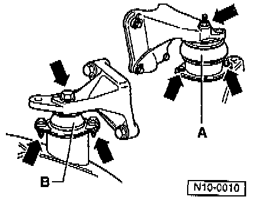

Alignment Of Engine In Chassis
NOTE: Aligning is only necessary when the engine and transmission have been removed and also when the rubber mountings have been loosened at the engine/transmission assembly mounts and the engine carrier.
1. Loosen right rear mount -A- at engine and sub-frame.
2. Loosen left rear mount -B- at transmission and sub-frame.

3. Loosen front mount at engine carrier and body.
4. Align and relieve stress on mounts by rocking engine/transmission assembly.
Front Engine Mount:

Right Rear Engine Mount:

5. Tighten front and right rear mounts as shown in the illustration.
Left Rear Engine Mount:

6. Tighten left rear mount as shown in the illustration.